数字孪生平台 · 图文操作手册
按真实界面截图说明「点哪个按钮、按什么顺序做」。适合第一次上手搭建场景、编排 UI、导出演示包。
场景编辑
UI 编排
联动预览
导出部署
1. 平台能做什么
把三维场景搭建、材质灯光、相机漫游、2D 大屏 UI、UI↔3D 交互、导出可托管网页包，收拢到同一编辑器。
解决什么问题
- 模型有了，但缺少可点击业务界面
- 大屏 UI 做了，却驱动不了相机 / 设备
- 成果只在编辑器里好看，不便交付演示
典型交付物
- 可回编的完整项目 ZIP
- 纯 3D 场景运行包
- 含 UI + 交互的部署包
- 截图 / GLB / 漫游视频 / 配置 JSON
推荐顺序：搭场景 →（可选）漫游 / 标签 →（可选）UI 编排与交互 → 联动预览验证 → 保存 / 导出。
2. 主界面认路（场景编辑）
进入平台后默认在 场景编辑。先认清七个区域：
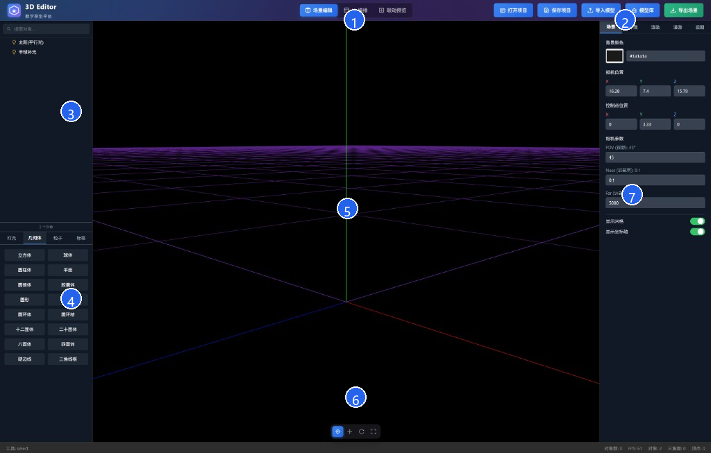
1
模式切换：在「场景编辑 / UI 编排 / 联动预览」之间切换整套工作台。
2
项目操作：打开项目、保存项目、导入模型、模型库、导出场景。
3
场景树：搜索并选中场景对象（灯光、模型、几何体、标签等）。
4
组件库：点击条目即可往场景里添加灯光 / 几何体 / 粒子 / 标签。
5
3D 视口：观察与点选对象；鼠标拖拽旋转视角，滚轮缩放。
6
变换工具条：选择 / 移动 / 旋转 / 缩放（对应快捷键 Q W E R）。
7
右侧属性：未选中对象时为全局设置（场景 / 环境 / 渲染 / 漫游 / 后期）；选中后显示该对象详情与材质。
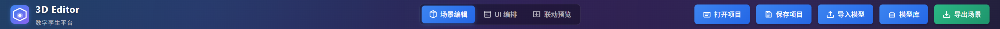
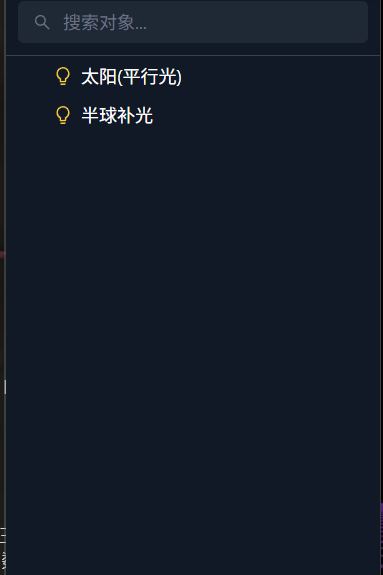
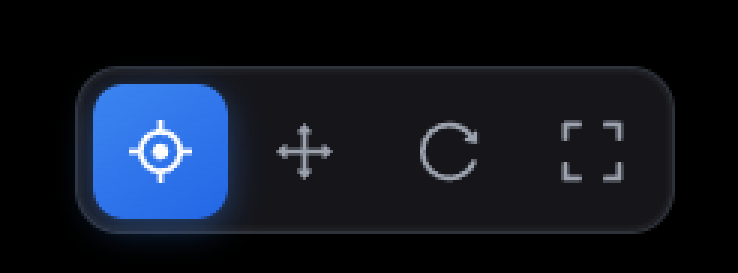
3. 三种工作模式怎么切
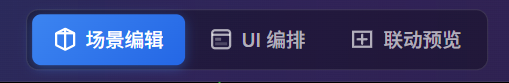
- 点击 场景编辑：搭建 3D、调灯光材质环境、做漫游。
- 点击 UI 编排：设计 2D 页面（按钮、图表等），并配置「点 UI → 驱动 3D」的交互。
- 点击 联动预览：在真实叠层下验证交互；确认后可点右上角 导出部署包。
- 预览中按 Esc 可快速退回场景编辑。
4. 打开 / 保存项目（怎么点）
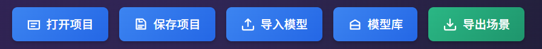
保存
- 确保当前在 场景编辑 或 UI 编排。
- 点击 保存项目。
- 浏览器会下载一份完整项目包（场景 + UI 画布等），妥善保存该 ZIP。
打开
- 点击 打开项目。
- 在文件对话框选择此前保存的
.zip（或可识别的.json）。 - 若当前场景已有内容，弹出确认框：点 继续打开 会覆盖当前场景与全部 UI 画布；点「取消」则放弃。
刷新或关闭浏览器标签页前请先保存。目前没有自动草稿强提示。
5. 导入模型（本地 / 模型库）
- 切到 场景编辑。
- 本地模型：点 导入模型 → 选择一个或多个
.glb/.gltf→ 等待加载完成。 - 在线模型库：点 模型库 → 在弹窗中浏览 / 搜索 Poly Haven 模型 → 选择分辨率 → 点选模型导入。
- 导入后在场景树中会出现新对象；点击名称即可选中，再到视口用 W 移动摆放。
模型库需要联网。体积大的资源首次加载可能较慢，请留意右下角通知提示。
6. 组件库：灯光 / 几何体 / 粒子 / 标签
位置：左侧下半区。先点页签，再点具体按钮，对象会立刻加入场景并通常自动选中。
6.1 添加几何体
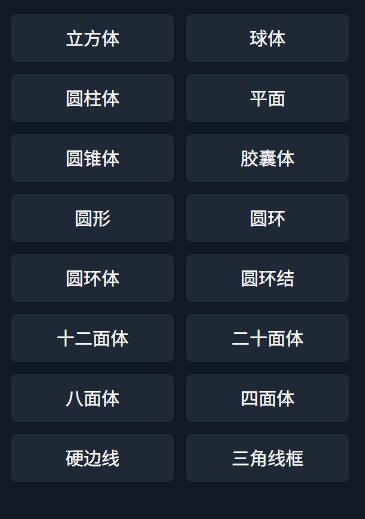
- 在组件库点 几何体 页签。
- 点击例如 立方体 / 球体 / 圆柱体 等任意按钮。
- 视口中出现物体后，用下方变换工具或 WER 调整。
6.2 添加灯光
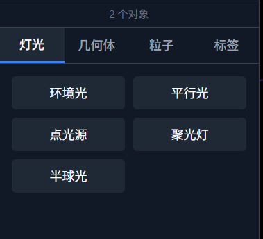
- 点 灯光 页签。
- 按需点击： 环境光 平行光 点光源 聚光灯 半球光
- 在场景树选中该灯光，右侧面板调节颜色、强度、位置、阴影等。
6.3 添加粒子
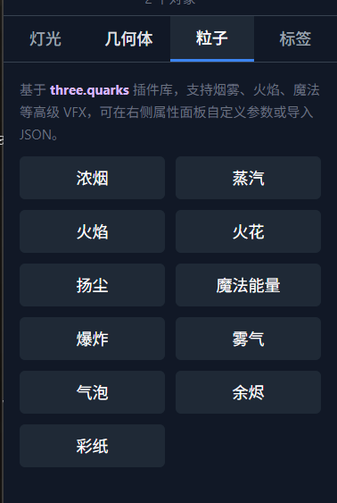
- 点 粒子 页签。
- 点击预设，如 浓烟、火焰、火花、爆炸 等。
- 选中粒子后，在右侧属性面板继续调参数，或按面板提示导入 JSON。
6.4 添加场景标签
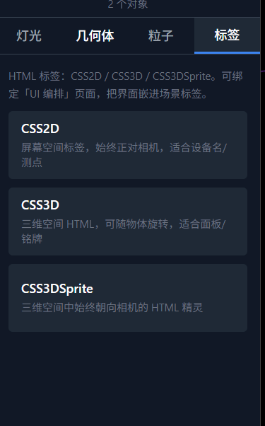
- 点 标签 页签。
- 按用途选择一种：
- CSS2D：始终正对屏幕，适合设备名 / 测点
- CSS3D：可随物体旋转，适合面板 / 铭牌
- CSS3DSprite：三维空间中始终朝向相机
- 在右侧标签属性里改文字、颜色；也可绑定「UI 编排」某一页，把界面嵌进标签。
7. 视口与变换怎么操作
- 在场景树或视口中点击要操作的对象。
- 点变换工具条图标，或按键盘：
工具 按钮 / 键 操作方式 选择 Q 只选中，不显示变换手柄 移动 W 拖拽彩色轴向箭头平移 旋转 E 拖拽旋转环 缩放 R 拖拽缩放手柄 - 需要精确数值时：选中对象 → 右侧「详情」里直接改 Position / Rotation / Scale。
- 删除：选中后按 Delete 或 Backspace（焦点不在输入框时）。
- 撤销 / 重做变换：Ctrl+Z / Ctrl+Y。
视角导航：左键拖拽旋转观察、滚轮缩放（以常见轨道控件为准）。网格 G、坐标轴 H 可显隐。
8. 右侧「场景」属性（未选中对象时）
先在视口空白处点击取消选中（或确保未选中物体），右侧会出现全局页签。
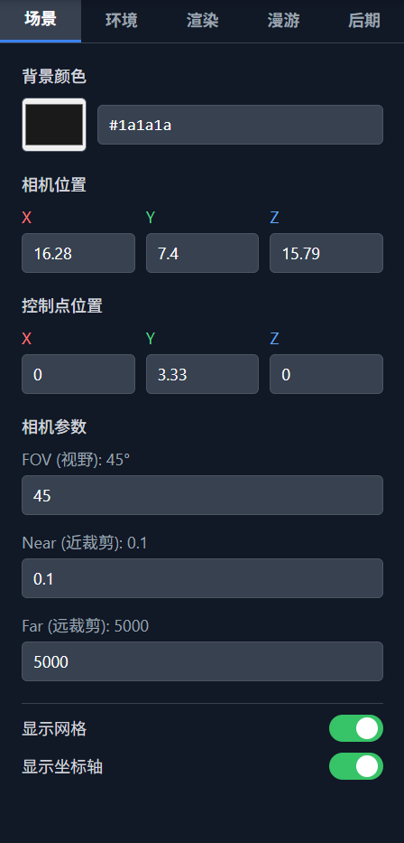
- 点右侧顶部 场景。
- 背景颜色：点色块或改十六进制值（如
#1a1a1a）。 - 相机位置 / 控制点位置：改 X/Y/Z 数值，立刻影响观察视角与看向点。
- 相机参数：调 FOV、Near、Far。
- 打开或关闭 显示网格、显示坐标轴 开关。
9. 环境与 HDR 怎么配
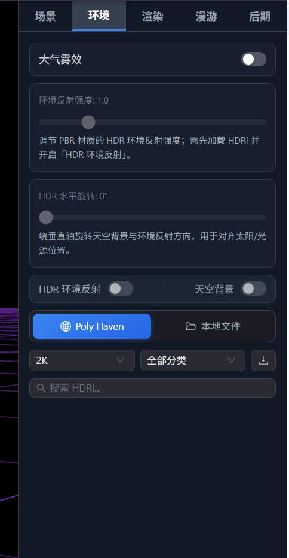
- 右侧点 环境。
- （可选）打开 大气雾效，再调雾颜色与范围。
- 选择 HDR 来源：点 Poly Haven 或 本地文件。
- 若用 Poly Haven：设分辨率（如 2K）→ 选分类 → 搜索框输入关键词 → 点列表中的 HDRI 加载。
- 加载成功后，打开： HDR 环境反射（让 PBR 材质反射环境）和 / 或 天空背景（把 HDR 当天空）。
- 拖动 环境反射强度、HDR 水平旋转，对齐太阳方向与明暗。
未加载 HDRI 或未开启「HDR 环境反射」时，反射强度滑条可能是灰色不可用，属正常状态。
10. 渲染设置怎么调
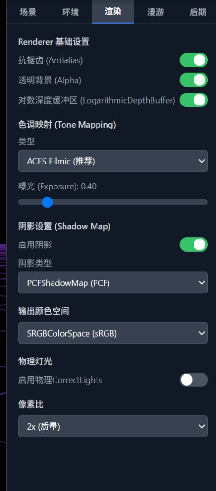
- 右侧点 渲染。
- 基础开关按需开启：抗锯齿、透明背景 (Alpha)、对数深度缓冲区（大场景防闪烁）。
- 色调映射：类型建议保持
ACES Filmic；拖动「曝光」控制整体明暗。 - 阴影：打开「启用阴影」，阴影类型可选 PCF 等。
- 输出颜色空间一般用 sRGB；像素比在「性能 / 画质」之间权衡（如 2x 更清晰更耗性能）。
11. 相机漫游：逐步点哪里
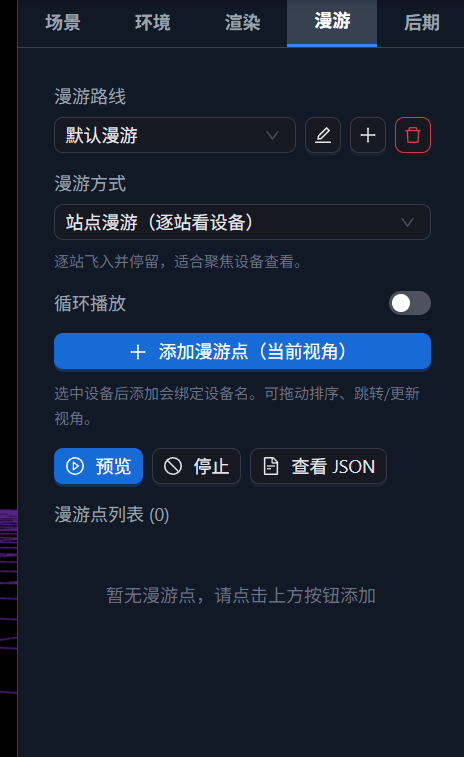
- 右侧点 漫游。
- 在「漫游路线」下拉里选路线；需要新路线时点右侧 +，改名点铅笔，删除点红色垃圾桶。
- 「漫游方式」选择：
- 站点漫游（逐站看设备）：飞入并停留，适合盯设备
- 一镜到底（曲线参观）：沿曲线连续走，至少 2 个点
- 在视口调整好当前观察角度。
- （站点模式可选）先在场景树选中设备，再点蓝色按钮 + 添加漫游点（当前视角），会绑定设备名；未选中则只记录视角。
- 在「漫游点列表」中拖动排序；可对某点执行跳转 / 更新视角（以面板按钮为准）。
- 需要循环时打开 循环播放。
- 点 预览 播放；点 停止 结束；点 查看 JSON 可检查或导出数据。
录制漫游视频请到「导出场景」面板的「漫游录制」卡片（见第 15 节）。
12. 后期处理
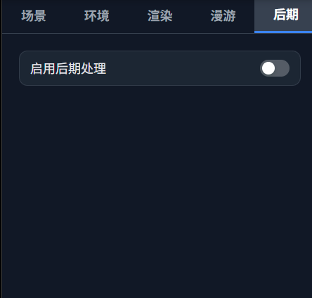
- 右侧点 后期。
- 打开 启用后期处理。
- 开启后会出现 Bloom、抗锯齿类、描边等子项（以当前版本面板为准），逐项打开并拖动强度滑条，边看视口边调。
13. UI 编排：从空白到可点击界面
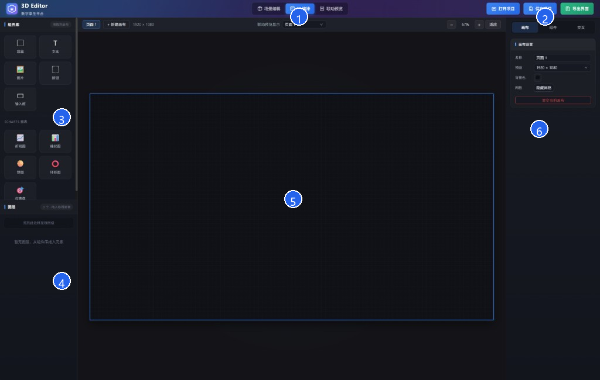
1
确认顶部已选中 UI 编排。
2
右上角可 打开 / 保存项目，或 导出界面（仅 UI 产物）。
3
组件库：基础组件（容器、文本、图片、按钮、输入框）与 ECharts 图表。
4
图层：管理当前页元素层级。
5
画布：拖入排版；可「+ 新建画布」做多页。
6
右侧属性：画布 / 组件 / 交互 三个页签。
操作步骤
- 顶部点 UI 编排。
- 右侧先点 画布：改页面名称、分辨率预设（如 1920×1080）、背景色；不需要网格可勾选「隐藏网格」。
- 从左侧组件库拖拽或点击添加：例如先放 按钮、文本，需要数据展示再拖 折线图 / 仪表盘 等。
- 在画布上拖动改位置，拖边缘改大小；选中后到右侧 组件 页签改文案、颜色、字号等。
- 配置与三维的联动：选中按钮 → 右侧点 交互（或「场景交互」区域）→ 添加动作（如点击后相机飞向目标、切换物体显隐、变换位置等）→ 选好场景中的目标对象。
- 多页：点画布上方 + 新建画布；场景标签也可绑定某一 UI 页。
- 画布快捷键：Ctrl+C / V 复制粘贴，Delete 删除选中组件。
右下「清空当前画布」会清空本页全部元素，点击前请确认。
14. 联动预览与导出部署包
- 完成场景与 UI 交互配置后，顶部点 联动预览。
- 视口中会看到 3D + UI 叠层；直接用鼠标点击你配置过交互的按钮，观察相机 / 物体是否按预期变化。
- 若无反应：回到 UI 编排检查该组件是否已添加场景交互、目标对象是否仍存在。
- 验证通过后，在预览模式右上角点 导出部署包，得到可静态托管的完整 ZIP（含 3D、UI、交互等）。
- 解压后本地预览示例：在目录内执行
npx serve .，用浏览器打开提示的地址。
「导出部署包」≠ 场景编辑里的「场景运行包」。前者含 UI；后者只含 3D。
15. 导出场景面板（逐卡片说明）
在 场景编辑 下点击右上角 导出场景，打开如下面板：
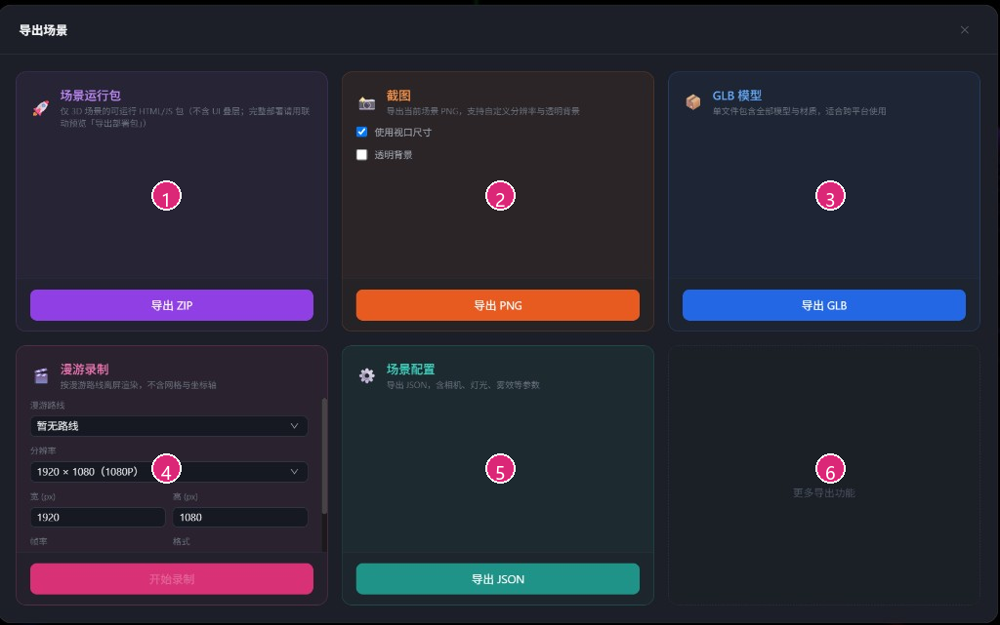
1
场景运行包 → 点 导出 ZIP：得到可运行的纯 3D HTML/JS 包（不含 UI）。
2
截图：勾选是否「使用视口尺寸」「透明背景」→ 点 导出 PNG。
3
GLB 模型 → 点 导出 GLB：单文件带走模型与材质。
4
漫游录制：先选「漫游路线」、分辨率 / 帧率 / 格式 → 点 开始录制（需已配置漫游点）。
5
场景配置 → 点 导出 JSON：导出相机、灯光、雾效等参数。
6
更多导出功能：预留扩展位。
关闭面板：点右上角 ×。
16. 快捷键速查
| 按键 | 功能 | 适用 |
|---|---|---|
| Q / W / E / R | 选择 / 移动 / 旋转 / 缩放 | 场景 |
| G / H | 网格 / 坐标轴显隐 | 场景 |
| Delete / Backspace | 删除选中 | 场景对象；UI 组件 |
| Ctrl+Z / Y | 撤销 / 重做（主要为变换） | 场景 |
| Ctrl+C / V | 复制 / 粘贴 | UI 画布 |
| Esc | 退出联动预览 → 场景编辑 | 预览 |
焦点在输入框或文本域时，快捷键不会触发，避免误删文字。